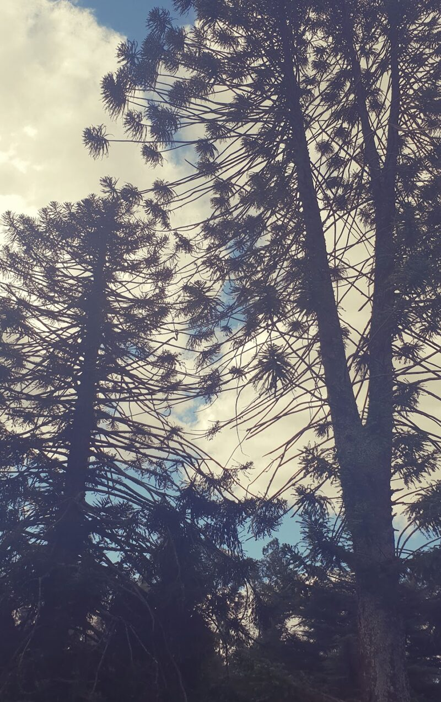
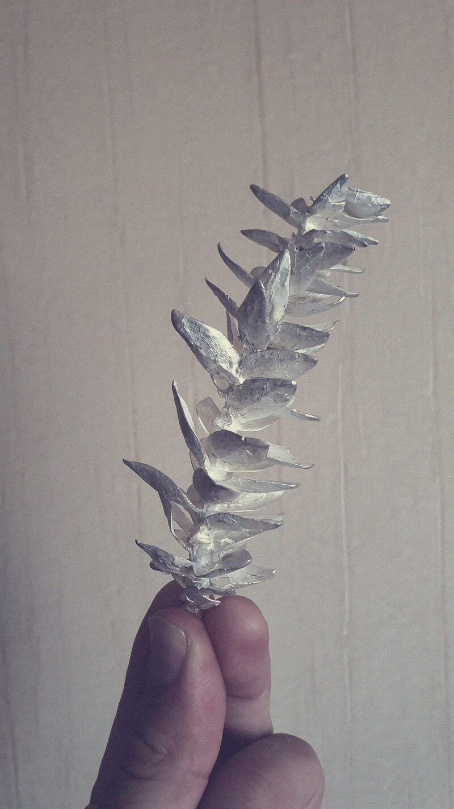

In Pepi’s words:
Araukaaria takes its name from the araucaria, an ancient tree deeply rooted in South America. Across the continent it is more than a tree. It is Chile’s national tree, it appears on the flag of the Argentine province of Neuquén and on the flag of the Brazilian state of Paraná, and it is sacred to the Mapuche people, whom the Spanish called Araucanos. In their language it is the pehuén, and its seeds, the piñones, have fed the Pehuenche, “the people of the pehuén”, for centuries.

For me, the tree is also personal. I grew up in Buenos Aires, but my childhood weekends were spent at our family’s countryside house in Moreno, where two great araucarias stood, enormous and powerful. We played croquet under them with friends and family, and we learned to respect them: their fallen branches were covered in sharp, spiky leaves that hurt to step on, and their seed cones, as big as pineapples, would come crashing down without warning. Today my father rests on that same land, just a few metres from those trees.

Years later, already living in Estonia, I went back to visit and brought home some seeds and branches. Some of the seeds I gave to Rauno, our drummer. The rest I ate. Maarja Palu cast one of the branches in silver, using the branch itself as the mould. The original burned away in the process, and what remains is its exact shape in metal. Later I photographed that silver branch and reduced it to a single colour, and that image became the base for the band’s logo.
The band started here in Estonia, so I gave the name an Estonian spelling. An araucaria can’t survive an Estonian winter. Araukaaria is the one that can grow here.